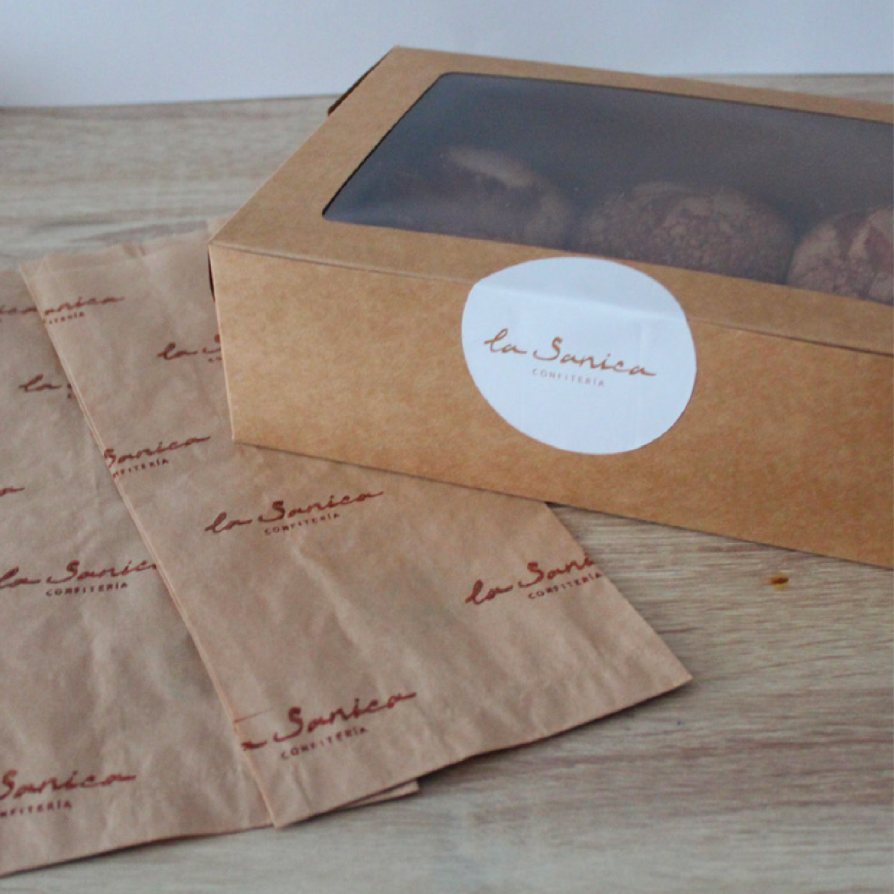
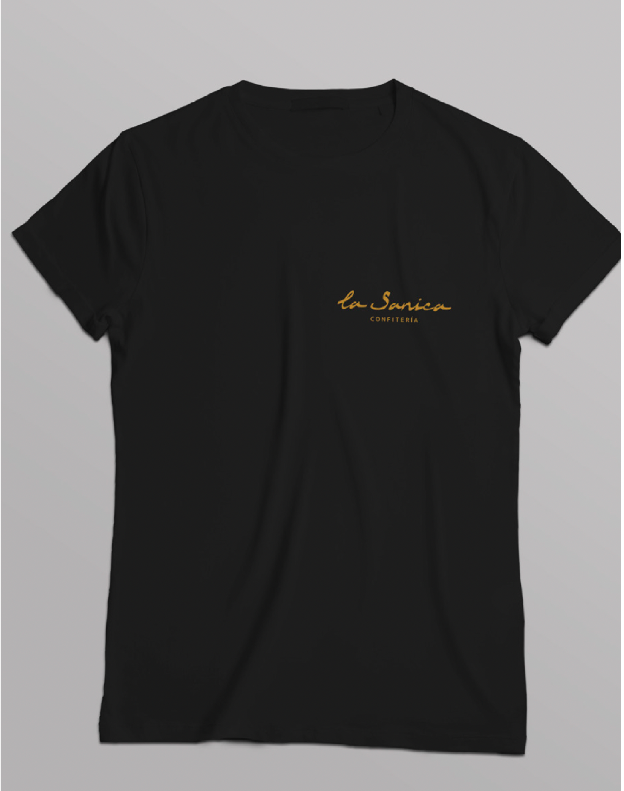
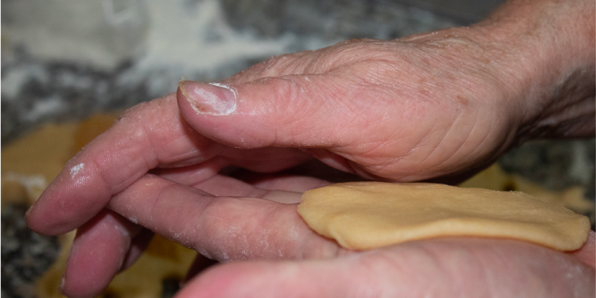

La Sanica
Proyecto de identidad visual
Este proyecto surge de mi TFC de Gráfica Publicitaria, hecho en 2021 y basado en una confitería llamada "La Sanica", el apodo de mi abuela. Este es un proyecto cargado de emoción, ya que es un homenaje a una mujer fuerte y valiente a la que siempre le ha gustadi cuidar de los demás a través de la cocina.




